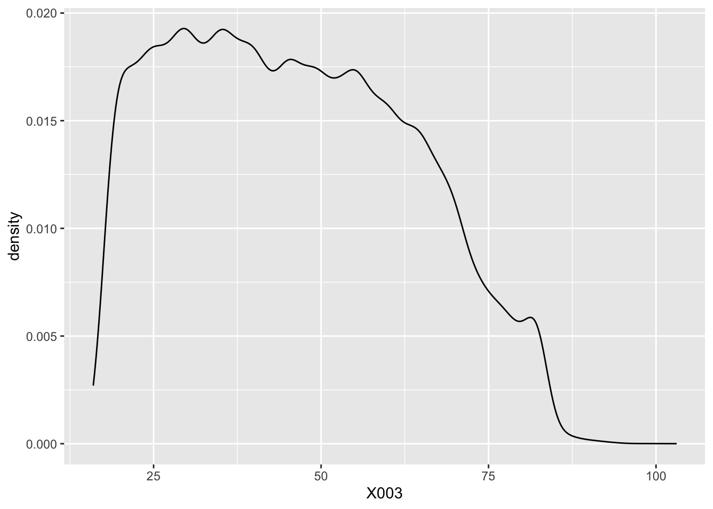
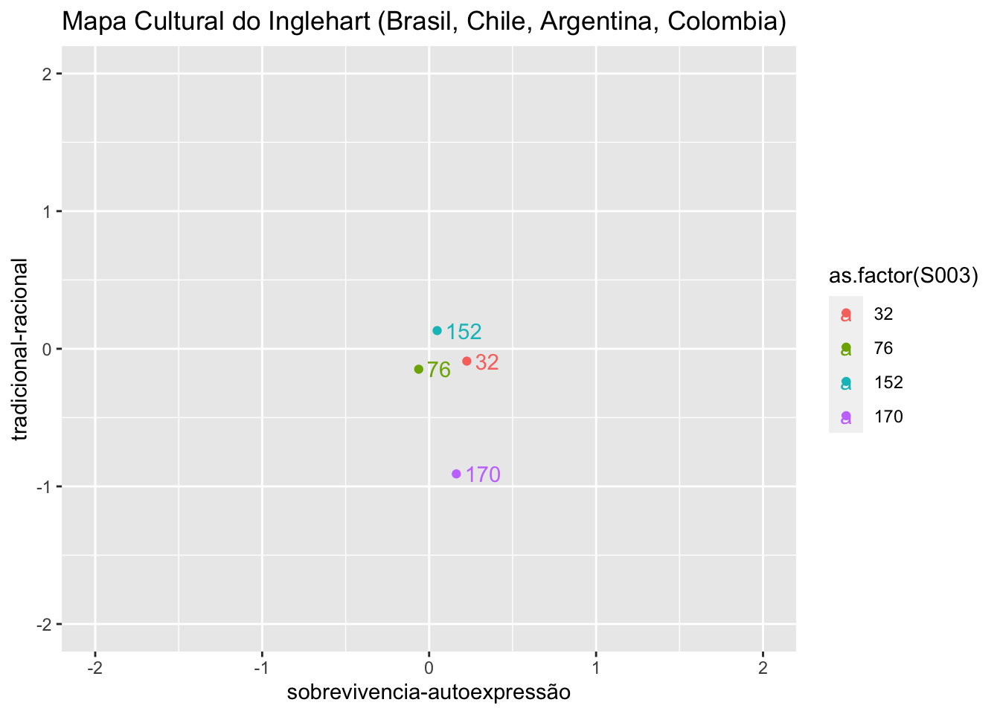

Capítulo 6 Visualizar os dados
Para visualizar os dados, usamos a biblioteca ggplot2() também da gramática Tidyverse.
Após organizar e manipular os dados e fazer análises descritivas, pode ser uma boa estratégia apresentar as informações em gráficos para evidenciar padrões, tendências e comparações. Conforme visto anteriormente, a biblioteca para plotar gráficos é a ggplot(). A biblioteca ggthemes() permite aplicar alguns temas já pré-estabelecidos.
O ggplot é uma biblioteca que constrói os gráficos em camadas. Primeiramente se define a “folha” com uma base de dados que será usada. Em seguida a geometria que será usada e os demais parâmetros dos gráficos.
O comando básico do ggplot é: ggplot(data = dados, aes(x = Explicativa, y = Resposta)) + geoma + ...
Tipos de Geomas disponíveis:
- Histograma:
geom_hist() - Barras:
geom_bar() - Pontos:
geom_point() - Diagrama de caixa (boxplot):
geom_boxplot() - Linhas:
geom_line()
O guia do ggplot2 pode ser encontrado aqui. Nesta galeria podem ser encontrados diversos exemplos de gráficos para se inspirar.
# Exemplo 1 plotar um gráfico de densidade da variável idade:
ggplot(df_wvs7, aes(x = X003)) + geom_density() 
No exemplo abaixo, reproduzimos o mapa cultural do Inglehart (Inglehart e Welzel 2005) para alguns paíse. Mas antes é preciso fazer algumas manipulações com os dados com o que aprendemos nos capítulos anteriores.
# Criar uma lista com os países que se quer analisar
paises <- c(76, 32, 152, 170) # 76=Brasil, 32=Chile, 152=Argentina, 170=Colombia
# Extrair e retrabalhar as variáveis que precisamos
df_y001 <- df_wvs7 %>%
select(S024, S020, S003, tradrat5, survself) %>% # selecionar as variáveis de interesse
filter(S003 %in% paises) %>% # filtrar os países
group_by(S024, S020, S003) %>% # agrupar por onda-país, onda e país
summarise(tradrat5 = mean(tradrat5, na.rm = T),
survself = mean(survself, na.rm = T)) # agregar os dados pela médiaFeito isso podemos criar a figura:
# lembre se de carregar a variável ggplot se ela não tiver sido carregada
library(ggplot2)
# Reproduzir o Mapa Cultural Inglehart
ggplot(df_y001, aes(x = survself,
y = tradrat5,
color = as.factor(S003),
label = as.factor(S003))) + # definir os dados e as dimensões
geom_point() + # definir a geometria principal (pontos)
geom_text(hjust = 0, nudge_x = 0.05, check_overlap = TRUE) + # adicionar os rótulos com a geometria de texto
scale_x_continuous(limits = c(-2, 2)) + # restringir o eixo x e y entre -2 e 2
scale_y_continuous(limits = c(-2, 2)) +
labs(x = "sobrevivencia-autoexpressão",
y = "tradicional-racional",
title = "Mapa Cultural do Inglehart (Brasil, Chile, Argentina, Colombia)") # adicionar os rótulos x, y e título
Referências
Inglehart, Ronald, e Christian Welzel. 2005. Modernization, Cultural Change, and Democracy: The Human Development Sequence. Cambridge, UK ; New York: Cambridge University Press.